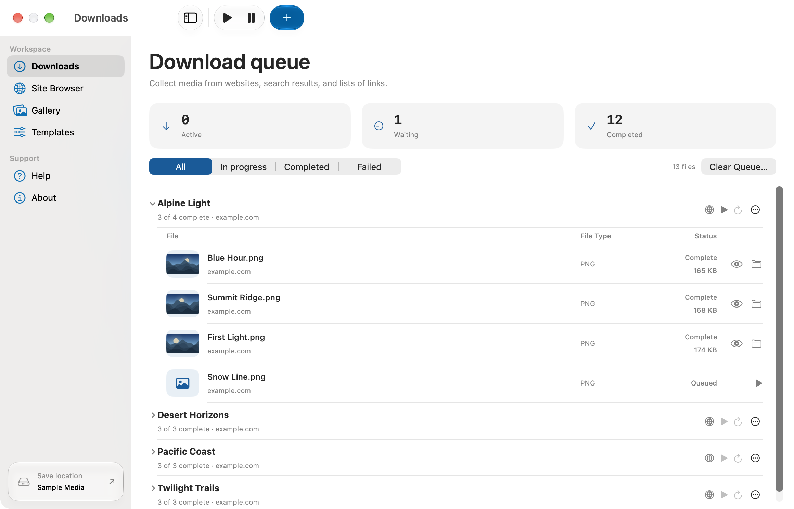
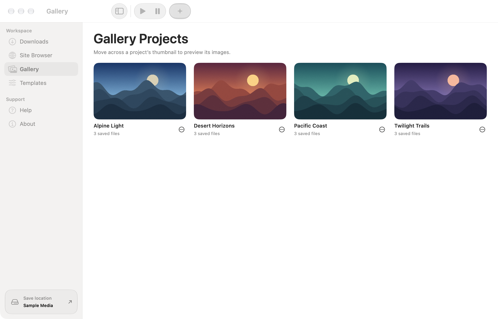

Scan websites and forums
Sign in through Site Browser, auto-scroll to load media, and follow supported gallery links to find full-size images behind thumbnails.
A native macOS app
Scan a website, forum thread, or list of links for images, videos, audio, and other files. Review what you find and download it in one queue.
macOS Tahoe 26 or later · Apple Silicon and Intel
Sign in through Site Browser, auto-scroll to load media, and follow supported gallery links to find full-size images behind thumbnails.
Search with Bing, Google, Yandex, DuckDuckGo, or Yahoo Images. Paste a URL list or import a text file for bulk downloads.
Use bundled yt-dlp and FFmpeg for supported video pages, playlists, HLS, and DASH streams.
Files appear under their source project. Pause or retry transfers, reopen the source, and preview saved files with Quick Look.
See a recommended template when you paste a link, or create a custom Web Rule from an existing site template.
Move the pointer across a project thumbnail to preview its images. Open the project to see a slideshow or play saved videos.
Captured in Media Harbor with example links and sample images.


gallery-dl, yt-dlp, FFmpeg, Python, and Deno ship with the app. Check for signed updates in Settings or opt in to automatic installation.
This build uses an ad hoc macOS signature. Apple’s guide to opening an app from an unidentified developer.
Media Harbor is developed by Isiah Johnson. isiahjohnson.com
ChatGPT Codex was used during development and testing.
Third-party licenses ship with the app. View dependency details and build instructions.